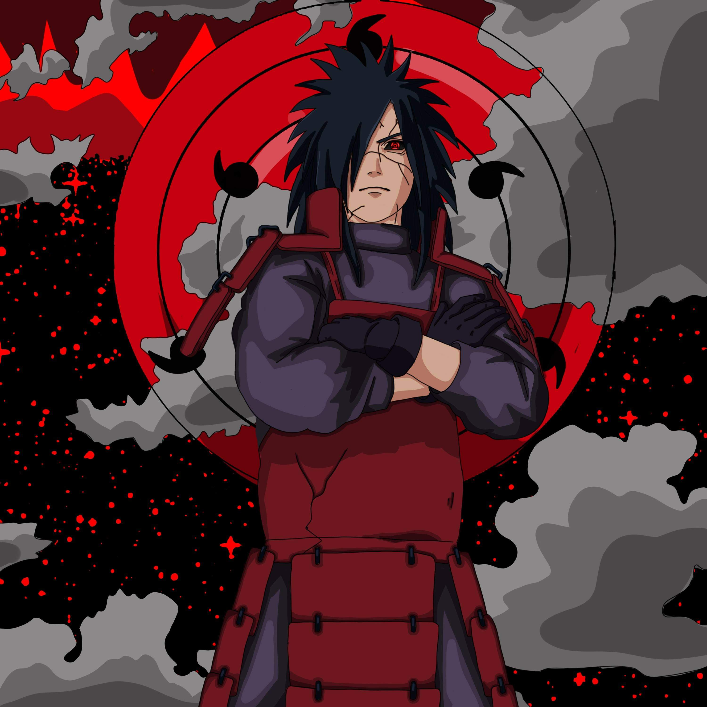

Madara Uchiha is one of the main antagonists of the Naruto franchise. He is the co-founder of the village of Konohagakure (the Village Hidden in the Leaves) and its first Rogue Ninja. Though thought to have died, Madara survived and planned to rule the Ninja World as a god, making Obito Uchiha into his apprentice. After Madara's actual death, Obito took his name and acted as his surrogate, carrying out his plans in his absence.
He is eventually resurrected as an indestructible undead ninja and takes part in the Fourth Great Ninja War, during which he succeeds in his plan. He was thought to be the main antagonist in the series, due to manipulating Obito as a pawn and causing the Fourth Great Ninja War, but was later just another pawn when Kaguya Ōtsutsuki is revealed

As the Jinchūriki of the Ten-Tails, Madara displays even greater mastery than Tobi himself. The extent of his normal powers skyrockets, and he becomes able to levitate, to unleash highly powerful onslaughts of elements mixed with natural energy, to spit unavoidable rays of light of immense piercing power, and to create Truth-Seeking Spheres: orbs of black chakra described as a mix of elements and natural energy far beyond any mortal capacity.
Wake up to reality. Nothing ever goes as planned in this accursed world. The longer you live the more you realize that the only things that truly exist in this reality are merely pain, suffering, and futility. Listen, everywhere you look in this world, whenever there is light, there will always be shadows to be found as well. As long as there is a concept in victors, the vanquish will also exist. The selfish intend of wanting to preserve peace initiates wars, and hatred is born in order to protect love. There are nexuses cause of relationships that cannot be separated...normally.